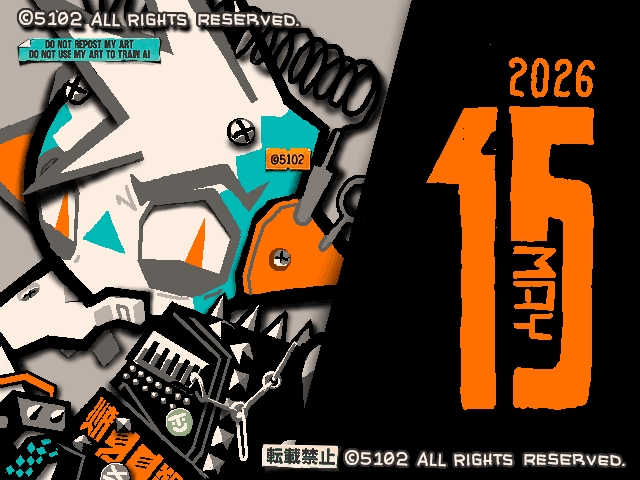
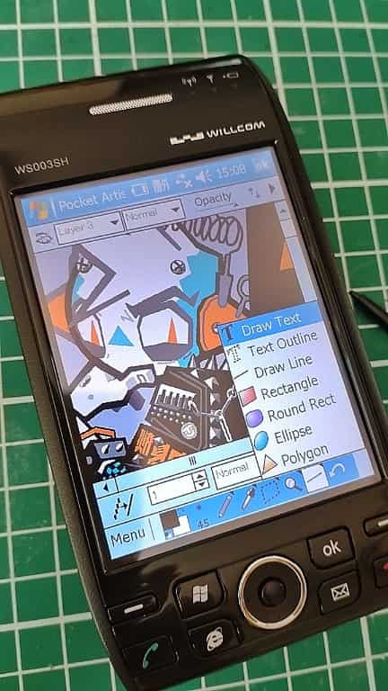

PDA向けお絵かきソフト「Pocket Artist」で描いたもの。
サイズは640x480で手書きブログと同じサイズ。右側に何を描くか思いつかなかったのでクソデカ日付を描くというズボラさよ。
小さい端末なので角度きついモノを描くときは端末ごと回せばいいから楽だ！手書きブログだと、回転なし＋ノートパソコン＋板タブ環境なので、横向きで描きたいな～という時は体勢がひどいことになる。

しかしまあW-ZERO3くんは電池の消費がものすごいな。リリース当時の人はこれをどうやって使っていたのかすごい気になる…。ビジネスマンが主なユーザーだっただろうし、バッテリー長持ちしないとメチャメチャ困るよね？これメインで毎日使うのしんどくねえか？
それとも、私がお絵かきソフトを起動してずっと睨めっこしてるから、こんなに充電消費が早いだけかな…
2026/05/18
 PDA(W-ZERO3)でお絵描き
PDA(W-ZERO3)でお絵描き